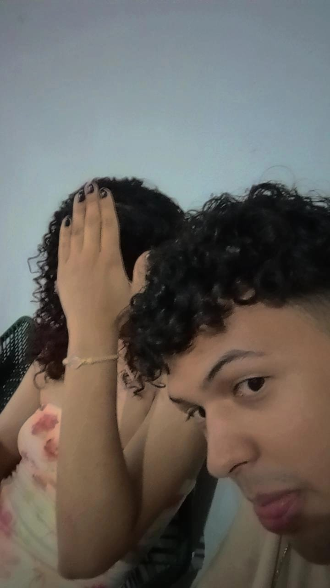
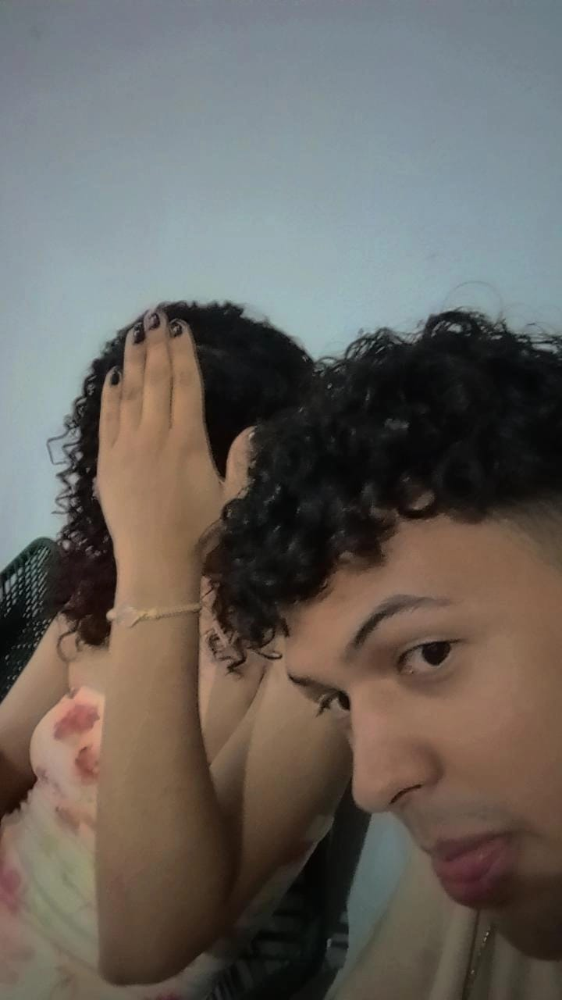

Algumas Palavras
"Cada detalhe é uma memória, cada memória é um pedaço da nossa história." Bem-vindo(a) ao nosso cantinho especial, onde momentos únicos ganham vida e sentimentos são traduzidos em imagens, palavras e música. 💖✨ Aqui, cada foto tem um significado, cada texto tem uma emoção, e cada música toca o coração. Navegue, relembre e celebre o que nos conecta. Porque, no final, são as pequenas coisas que fazem a vida ser tão grande. "Você é o meu tudo, e este espaço é para celebrar o que temos de mais bonito: o amor."